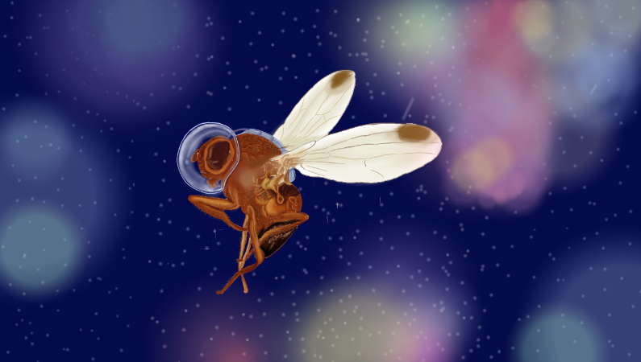

Flies In Space
November 12, 2020 5:30pm IST We all know about humans as an astronaut, but have you ever thought of flies as astronauts? How can those small, tiny creatures be astronauts? It is a fascinating fact that fruit flies were the first organisms to be sent into space. On Feb 20, 1947, the humble fruit fly was sent to the place where no humans have ever reached with the help of the U.S. launched the V-2 rocket. The V-2s were high-tech, long-range weapons that could fly at a top speed of 3,500 miles per hour (5,632 kilometres per hour). The flies reached an altitude of 68 miles (108 km) and were recovered alive by parachute.
This experiment helped the scientists to learn how the conditions in orbit may affect their immune systems. When human beings spend time in space, their bodies go through various changes. For example, the mass of the astronaut’s muscles and bones decreases, and their immune system function decreases. These changes in the astronaut physiology are essential for the crew to understand as they have to spend months on the International Space Station or have to go through long-duration travels to, say the moon or Mars.
Despite the many differences, fruit flies have a lot in common with humans at genetic, cellular and biochemical levels. Even for the research on Earth, the fruit flies are considered a great model system for biological studies, mostly because of their short lifespan and small size. The flies also reproduce easily, which means that a fly progeny that has only experienced microgravity and the space flight environment can be studied during a single shuttle flight.
Author :
Ritesh Khetarpal
Related Articles
Camouflage: A strategy for survival
November 12, 2020 6:45pm IST
If we look into the Oxford dictionary for the meaning of camouflage we will get: “the way in which an animal’s colour or shape matches what is around or near it and makes it difficult to see”. They use it as a defensive mechanism as well as an offensive mechanism.

Cancer And Its Prevelence in Arthopods
November 12, 2020 4:55pm IST
Cancer is one of the most dreaded diseases in humans. But are there any pieces of evidence of cancerous growths in arthropods? Do the most diverse group of creatures on earth suffer from tumorous growths too? Let’s find out.

How Ants Moves In Ques ?
November 12, 2020 4:47pm IST
We have all seen the ants walking along a line towards a food source. But have you thought about how they could be so precise in their movement? Are there any traffic ants or road maker ants that make sure that ants walk in a designated path? They sure don’t have GPS to navigate their way around.